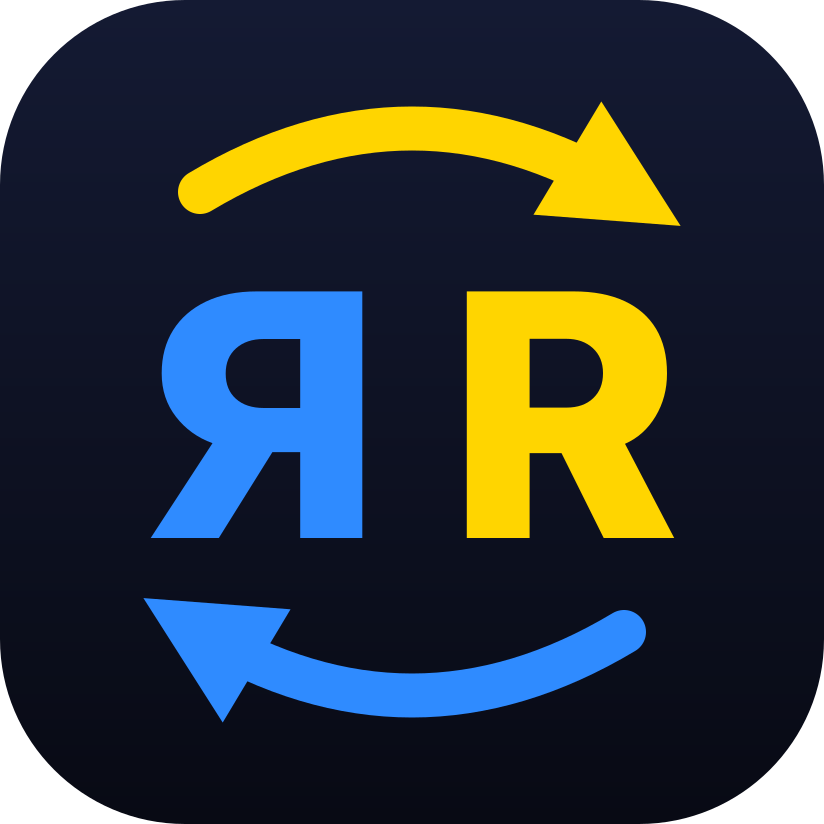

AURA SwitcherОновлено 3.11.2026 · English
AURA Switcher нічого не надсилає в інтернет і не збирає даних про вас. Уся робота відбувається на вашому пристрої.
Щоб виправити слово, набране не в тій розкладці, програма бачить натискання клавіш, поки ви друкуєте. Вона тримає в пам'яті лише останнє слово, щоб перевірити й виправити його. Набраний текст ніде не зберігається й нікуди не передається.
Щоб змінити розкладку виділеного тексту, програма на мить копіює його через буфер обміну, а потім повертає туди те, що було раніше.
Лише ваші налаштування: увімкнено чи ні, звук, мова меню, програми-винятки, прив'язки мов до програм і ваш список слів. Вони лежать у налаштуваннях системи (Windows — реєстр, macOS — налаштування програми) і нікуди не передаються.
Програмі не потрібен інтернет. Посилання в меню («Повідомити про проблему», сайт) відкривають ваш браузер чи пошту лише тоді, коли ви їх натискаєте. «Повідомити про проблему» створює чернетку листа з версією програми й системи та кодами ваших розкладок — ви бачите її й самі вирішуєте, чи надсилати. Версію з Microsoft Store оновлює сам Store за правилами Microsoft.
Сайт рахує відвідування через GoatCounter — без cookies і без даних, за якими можна вас упізнати.
Питання: auraswitcher@gmail.com. Код програми відкритий: GitHub.
AURA Switcher sends nothing online and collects no data about you. Everything runs on your device.
To fix a word typed in the wrong layout, the app sees your keystrokes while you type. It keeps only the last word in memory to check and fix it. Typed text is never stored or sent anywhere.
To convert selected text, the app briefly copies it through the clipboard, then puts back what was there before.
Only your settings: on/off, sound, menu language, excluded apps, per-app languages and your word list. They live in the system settings (Windows registry, macOS app preferences) and are never sent anywhere.
The app doesn't need the internet. Menu links (Report a problem, website) open your browser or mail only when you click them. Report a problem creates an email draft with the app and system versions and your layout codes — you see it and decide whether to send it. The Microsoft Store version is updated by the Store under Microsoft's terms.
The website counts visits with GoatCounter — no cookies and no data that identifies you.
Questions: auraswitcher@gmail.com. The source code is open: GitHub.